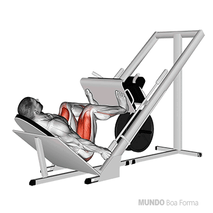

Agachamento Livre
Controle o movimento: Desça de forma controlada e mantenha o alinhamento da coluna e dos joelhos para evitar lesões.
Evite curvar as costas: Mantenha a coluna sempre reta e o core ativado durante todo o movimento.
Evite descer além do limite: Embora seja importante descer até que as coxas fiquem paralelas ao chão, descer além disso, sem a mobilidade necessária, pode aumentar o risco de lesão nos joelhos e lombar.

Leg Press 45
Não trave os joelhos: Nunca trave os joelhos no topo do movimento, pois isso pode sobrecarregar as articulações e aumentar o risco de lesão.
Controle a descida: Sempre controle o movimento, especialmente durante a fase de descida, para evitar sobrecarregar os joelhos e a lombar.
Não desça demais: Evite descer a plataforma até o ponto onde os joelhos ultrapassem a linha do quadril ou fiquem excessivamente dobrados, o que pode comprometer as articulações dos joelhos e a coluna.

Pés mais altos na plataforma: Colocar os pés mais altos foca mais nos glúteos e isquiotibiais (posterior da coxa).
Pés mais baixos na plataforma: Isso aumenta o foco nos quadríceps (parte frontal das coxas).
Pés mais afastados: Trabalha mais os adutores (parte interna das coxas).
Pés mais juntos: Foca mais nos quadríceps.
Cadeira Extensora
Evite travar os joelhos: Não trave os joelhos completamente no final do movimento de extensão, pois isso pode causar uma sobrecarga nas articulações e aumentar o risco de lesões.
Controle o movimento: Evite movimentos rápidos e impulsivos. Tanto a fase de subida quanto a de descida devem ser feitas de forma lenta e controlada, para maximizar o trabalho muscular e proteger as articulações.
Postura correta: Mantenha sempre as costas apoiadas no encosto e evite curvar ou inclinar o tronco para frente.

Cadeira Solear
Postura correta: Mantenha as costas retas e relaxadas, sem curvar ou tensionar os ombros.

Cadeira adutora
Postura correta: Sempre mantenha as costas bem apoiadas e não permita que o tronco se incline para frente durante o exercício.